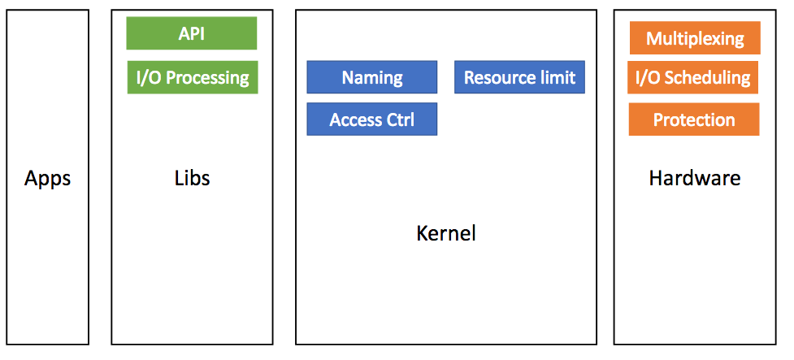
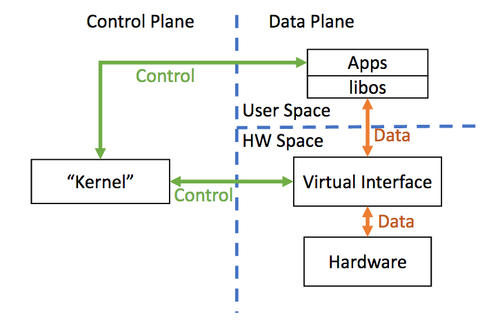
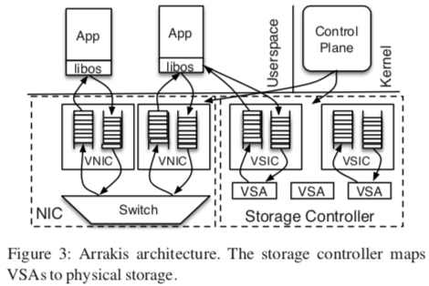

"Arrakis: The Operating System is the Control Plane"
Problem
How can we design an OS for I/O intensive applications such that most I/O operations do not need kernel mediation?
Background
- The authors make a classic efficiency argument: servers usually perform conceptually simple operations, but in practice this results in too much operating system overhead.
System Design
-
The new secret sauce is that hardware device virtualization allows user-level programs to get efficient access to I/O without compromising protection.
-
I/O centric design:
- Bypass kernel
- Abstractions: user-space device access
- Single-Root I/O Virtualization (SR-IOV) is the hardware secret sauce. It allows software to setup flexible hardware multiplexing.
-
Kernel functionality re-divide in Arrakis:

- Architecture:


-
Hardware Model:
- NICs (Multiplexing, Protection, Scheduling)
-
Storage
- VSIC (Virtual Storage Interface Controller): each with queues, etc
- VSA (Virtual Storage Areas): mapped to physical devices; associated with VSICs; VSA & VSIC: many-to-many mapping
-
Control Plane Interface:
- VIC (Virtual Interface Card): Apps can create/delete VICs, associate them to doorbells
- doorbells associated with events on VICs
- filter creation (e.g.,
create_filter(rx,*,tcp.port == 80)) -
Features:
- Access control: enforced by filters; infrequentily invoked (during setup, etc)
- Resource limiting: send commands to hardware I/O schedulers
- Naming: VFS in kernel; actual storage implemented in apps
-
Network Data Interface:
- Apps send/receive directly through sets of queues
- Filters applied for multiplexing
- Doorbell used for asynchronous notification (e.g., packet arrival)
- Both native (w/ zero-copy) and POSIX are implemented
-
Storage Data Interface:
- VSA supports read, write, flush
-
persistent data structure (log, queue)
- operations immediately persistent on disk
- eliminate marshaling (layout in memory = in disk)
- data structure specific caching & early allocation
Remarks
-
This paper exploits the wide variety of hardware. Some of them do not even exist or are quite limited (e.g., VSIC support). Personally, I'm not a huge fun of this type of research as the main goal seems to be "let's delegate OS work to the hardware". But, it indeed lays out a vision that what OS can be if hardware is powerful enough and the applications on top of OS are not quite complex and do not need much kernel involvement (e.g., scheduling).
-
The presentation of motivation through rigorous measurement (Table 1 and Table 2) is something I really enjoy. In addition, the detailed analysis of the overhead involving kernel (Background section) has much useful information to further study for myself.
-
Pros: much better raw performance (for I/O intensive Data Center apps)
- Redis: up to 9x throughput and 81% speedup
- Memcached: scales up to 3x throughput
-
Cons:
- Some features require hardware functionality that is not yet available
- require modification of applications
- not clear about storage abstractions
- not easy to track behaviors inside the hardware